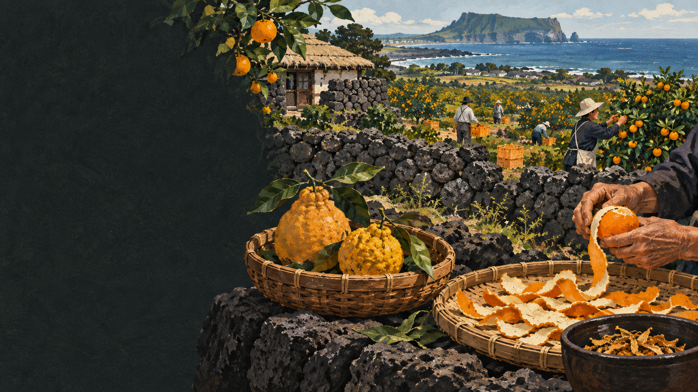

진상과 과원
귀한 감귤은 국가와 관청의 관리 아래 공물로도 쓰였습니다.
 제주에서는 이 재료를
제주에서는 이 재료를
JEJU FOOD FIELD GUIDE · 34
귀한 진상품이던 감귤은 재배 기술과 품종,
유통이 바뀌며 섬의 산업이 되었습니다.
제주 음식의 생활문화를 바탕으로 제작한 기록화 · 생성 이미지
제주 감귤은 오래전 기록과 진상 문화에 등장하지만 옛사람 모두가 흔히 먹던 과일은 아니었습니다. 관청의 과원과 진상 체계 안에서 귀하게 관리된 시기가 길었습니다.
20세기 온주밀감의 상업 재배와 품종·재배 기술, 유통망의 확대가 감귤을 농촌 경제와 제주 경관의 상징으로 바꾸었습니다. 오늘은 노지 온주밀감과 하우스 감귤, 한라봉·천혜향 같은 만감류가 계절을 나눕니다.
결과만 보지 않고 손질과 도구, 시간과 사람의 일을 함께 봅니다.
지역과 출하시기에 맞는 나무를 고릅니다.
봄 꽃 뒤 착과량을 조절합니다.
바람·병해·수분과 햇빛을 관리합니다.
당도·산도와 색을 살펴 따냅니다.
생과와 주스·잼·차·과즐 재료로 나눕니다.
이름과 환경, 공동체의 쓰임을 나누어 읽습니다.
귀한 감귤은 국가와 관청의 관리 아래 공물로도 쓰였습니다.
온주밀감 보급과 기술·유통 확대로 농가의 중요한 소득원이 되었습니다.
말려 차와 향신 재료로 쓰고 가공품의 향을 살립니다.
유명한 메뉴보다 왜 이런 재료와 방식이 제주 생활에 필요했는지를 먼저 묻습니다.
이름 하나로 단정하지 않고 재료·공정·쓰임을 함께 비교합니다.
노지감귤·하우스감귤의 중심
한라봉·천혜향 등 다양한 품종군
품종·재배법 따라 가을~겨울 중심
대체로 더 늦게 익혀 수확
껍질이 얇고 작은 편
크고 향·과육 특성이 다양
노지와 시설 모두
주로 시설에서 온도·품질 관리
감귤을 제주 고유의 영원한 풍경처럼 말하기보다, 진상 과일에서 농가 소득 작물로 바뀐 시간을 살펴야 합니다.
기후위기와 품종 전환, 못난이 과일의 가공은 다음 감귤 풍경을 만드는 현재의 이야기입니다.
오늘의 흔한 감귤 한 알은 과거의 귀한 공물과 현대 농업기술 사이에 놓여 있습니다.
한라봉·천혜향 같은 이름은 품종·상품 체계와 연결됩니다. ‘감귤’이라는 큰말 아래 재배 방식과 수확 시기를 함께 표시합니다.
지역·가정·생산자에 따라 설명과 조리법이 다를 수 있습니다. 현장 인터뷰를 인용할 때는 당사자의 사용 동의를 받습니다.